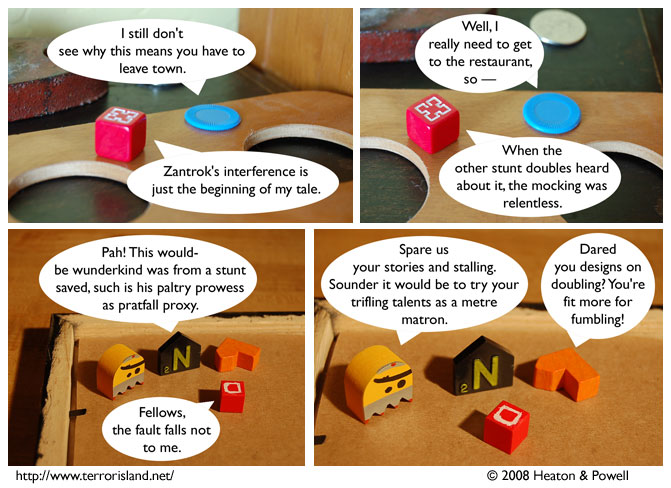

Strip #267
— Monday, February 25, 2008
The stunt doubles’ names are Grover, Nop Nopper, and The Amazing Ficus.
Notes, Thoughts, &c.
Ben’s Notes
Wow, stunt doubles used to be mean. I’m glad they’re not like that these days.
Lewis’s Notes
Sometimes I regret the decision to do all of the flashbacks in past-speak, because it makes it harder to script the flashbacks. Other times though, it winds up being a fun adventure where Ben and I have to find alliterative synonyms for present-day smack talk. That’s when it is fun.